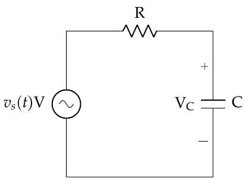
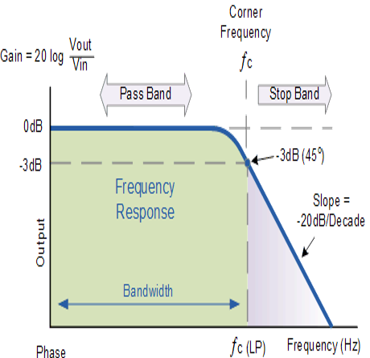
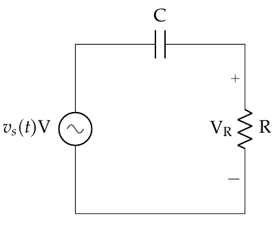
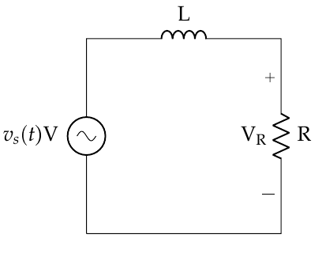
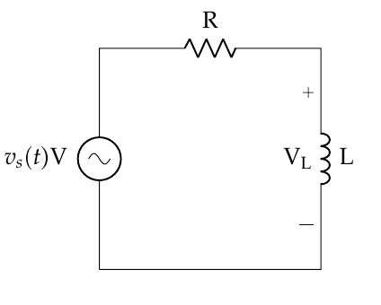
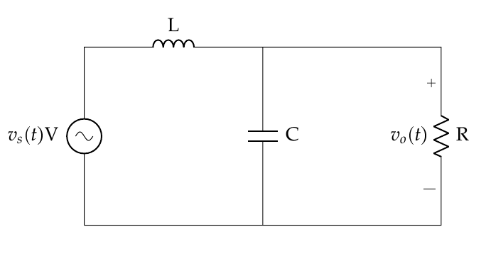

Objective 2.4#
LO# |
Description |
|---|---|
2.4 |
I can determine the filter type, gain, and cutoff frequency of simple series circuits containing a resistor, capacitor, and/or inductor. |
Passive Filters Using RLC Circuits#
If you recall the lesson on RLC circuits, we learned how to use impedance to treat inductors and capacitors like resistors. During that lesson, we calculated impedance at a specific angular frequency, ω. We often want to know how a circuit would respond over a wide range of frequencies. Therefore, we often keep ω as a variable when calculating impedances, and then see how the output voltage behaves over the frequency spectrum. Let’s start by taking a look at an R-C (resistor-capacitor) circuit and keep all the quantities generic (VS, R, C, f, etc.) as shown in Figure 1:

Figure 1: A circuit containing a series resistor and capacitor.
The impedance of the capacitor is:
Which makes the equivalent impedance the sum of the resistor and capacitor (since they’re in series):
Therefore, the voltage across the capacitor is:
Often, in the circuits world, we’re interested in the ratio of the output voltage to the input voltage (this is called the gain), so we write the equation:
For the last step we took advantage of the fact \(\omega = 2\pi f\) so we could express the gain in terms of frequency. Now that we have this final form, let’s take a look at what happens in different regions of the spectrum. For very small frequencies, as \(f\ \rightarrow \ 0\), we see that the right side of the equation goes to 1:
This indicates that a DC (\(f = 0\ Hz\)) input signal is passed through with no loss. The converse of this is when we have very large frequencies, that is when \(f\ \rightarrow \ \infty\). In this case, the ratio \(\frac{V_{C}}{V_{S}}\) goes to 0:
Therefore, higher frequencies are blocked using this circuit configuration. Clearly, this represents a low pass filter, but what is the cutoff frequency? With analog filters like this, we have to consider the real behavior of circuit components. In the ideal filter lesson, we assumed the output of a filter is binary around the cutoff frequency (meaning, everything on one side of the cutoff frequency passes, while everything on the other side is blocked). In reality, it’s not as clear cut.
Non Ideality#
Since analog circuit components like capacitors and inductors have a finite and measureable response time – it takes them some time to charge and discharge – the output of a filter rolls off slowly, rather than “falling off a cliff” like they did in the ideal filter of the last lesson. Figure 2 shows an example of how a real filter behaves. Note that the y-axis has units of decibels (dB) – that is essentially a way of representing the ratio of the output to input on a logarithmic scale. What is important, though, is that the amplitude of the output signal (Vout) decreases slowly, rather than going immediately to zero. This gives us some difficulty in defining the exact cutoff frequency, because there are frequencies in the “stop band” with a measurable (non-zero) amplitude. If we aren’t careful, we won’t block out all the frequencies we meant to block. Specifics of dB aside, what we are essentially looking for is the “3dB point”, which means the output power (not voltage!) is half the power of the input. Generally, engineers agree this is the cutoff frequency of a filter.

Figure 2: The frequency response of a real LPF filter.
Since the power in a signal is proportional to the square of its voltage (or current) the cutoff frequency is where the amplitude of the voltage (or current) output is reduded to 70.7% of the input. Shown mathematically, this is where
For a simple circuit with a series capacitor and resistor, as shown in Figure 1, we can find the cutoff frequency by finding where the magnitude of \(\frac{V_{C}}{V_{S}} = \frac{1}{\sqrt{2}}\). Note that we only care about magnitude at this point, because all the phase tells us is how much the signal delayed in time.
Remember, we find the magnitude (denoted by vertical bars) of a complex number by:
Therefore, if we want to rewrite the expression for the gain, we can find the magnitude of the numerator and the denominator separately:
Remember that at the cutoff frequency we want \(\left| \frac{V_{C}}{V_{S}} \right| = \ \frac{1}{\sqrt{2}}\), so we can use the equation above to write:
Now, solving for f, we find the cutoff frequency!
Recognizing that was a lot of math, it’s important to understand how we arrived at the cutoff frequency for an R-C circuit.
C-R Circuit#
Now, we can repeat this process for a C-R circuit, where we have switched the capacitor and resistor and measure the output voltage across the resistor (Figure 3).

Figure 3: A circuit containing a capacitor and resistor in series.
Here, the output voltage can be found through the impedances, just as before:
In this case, we find the frequency behavior to be as follows:
And we recognize it’s a high pass filter! Following the same methodology as before, we find the cutoff frequency to be:
Which is exactly the same as the LPF!
R-L and L-R Circuits#
As you may imagine, we can achieve similar effects using inductors and resistors, but the order of components is switched for LPF and HPFs. Just as with the R-C and C-R circuits, for both the HPF and LPF cases, the cutoff frequency is the same:
 |
 |
|---|---|
Figure 4: A low pass filter using an inductor and resistor. |
Figure 5: A high pass filter using a resistor and inductor. |
As a final note, we could string together different configurations of resistors, capacitors, and inductors to produce band pass and band reject filters for a variety of applications. However, the analysis of these higher order circuits is beyond the scope of this course.
Practical Applications#
Now that we understand how to create simple low and high pass filters, let’s take a few moments to explore the implications of this in a more practical sense. For example, consider a basic transmission line, such as a coaxial cable, or an Ethernet cable. We use these kinds of cable all the time to transmit large amounts of information. Typically, when we think about these kinds of cables, it is easy to imagine they have a resistance, but they also contain a small amount of inductance and capacitance. In fact, when it comes to many applications at higher frequencies, if we do not account for this inductance and capacitance when designing a system, our system will not behave as expected. Although there are many facets to this issue that are beyond the scope of this course, consider what happens when we draw an RLC circuit model of a transmission line. In this case, we have inductors in series with parallel capacitors and resistors:

Figure 6: A circuit containing a resistor, capacitor, and inductor.
Although we won’t derive the relationships here, if we follow a method similar to the previous sections, we can determine this is a low pass filter. Now, if the values of the components are very small (and, for a typical transmission line that is not overly long, they are) the cutoff frequency is high, but it exists nonetheless. This indicates we are limited in the frequencies we can transmit through a typical copper transmission line. That is why we need a different material (fiber optic cables) to transmit information at optical frequencies!
Also, when we include this miniscule inductance and capacitance in our model of a transmission line, we also discover one key cause of latency in a system. For example, you may press a button a experience a noticeable delay between your input and the expected response of the system. This is because inductors and capacitors introduce a phase delay into the voltage, which manifests itself in the physical world as a time delay. Also, if we are not careful in designing systems, certain very sensitive components may “misread” an input signal, due to a transient “ringing” and produce an unexpected response.
Finally, and likely most relevant to our lives, are the consequences of non-ideality in filters. Recall that the cutoff frequency is not, in reality, a sharp cutoff, but more of a slow degradation in the amplitude of frequencies outside the pass band. In reality, if we don’t account for this when designing our information systems, channels near one another may bleed over and interfere with each other. This means we need to make sure:
Our filters are properly designed for as steep a rolloff as possible, and
We properly space our channels to avoid this unintended effect.
For example, if two radio channels are too close in frequency and the filter on your communications system does not have a steep enough rolloff, you may hear both channels at the same time. One will be softer than the other, due to the degradation the filter provides, but it will be noticeable.
Example Problem 1#
A signal passes through a circuit consisting of a 60-Ω resistor and a 1-μF capacitor in series. The output voltage is across the capacitor. What kind of filter is this and what is the cutoff frequency?
Understand: Since we have an R-C circuit, and we know the output voltage will be across the capacitor, and we see it is a LPF. Additionally, we can calculate the cutoff frequency from the component values.
Identify Key Information:
Knowns: We know the component values, and we know that this circuit is a LPF.
Unknowns: The cutoff frequency.
Assumptions: We are dealing with steady state analysis, so we don’t have to worry about transients.
Plan: Use the cutoff frequency equation.
Solve:
Answer: We have a LPF with a cutoff frequency of 2.65kHz.
Example Problem 2#
You are deployed and need to design a HPF for a field expedient radio. This radio receiver must have a cutoff frequency of 1kHz and you have the following resistors available to you: 100 Ω, 200 Ω, 500 Ω, and 1k Ω.
Understand: We want to design a high pass filter, which can be done with either a C-R or R-L configuration. Additionally, we have some limitation on the available equipment, specifically with regards to the resistors.
Identify Key Information:
Knowns: We need a HPF, with \(f_{cutoff} =\) 1kHz, and have certain resistors available.
Unknowns: The circuit configuration, our resistor value, and our capacitor value.
Assumptions: We are dealing with steady state analysis, so we don’t have to worry about transients.
Plan: Since we are free to choose our circuit configuration and our capacitor and inductor values, we choose an R-L circuit. Also, we can choose a resistor, so we arbitrarily choose the 500 Ω resistor and use the cutoff frequency equation to find the value of the inductor.
Solve:
Answer: We design the following filter, with R=500 Ω and L=79.6mH.